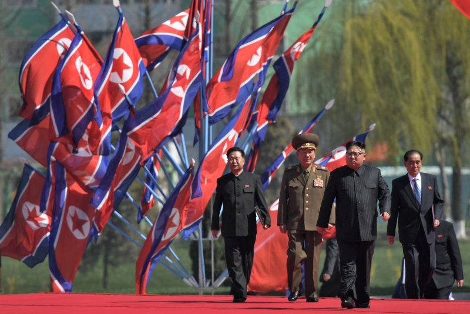
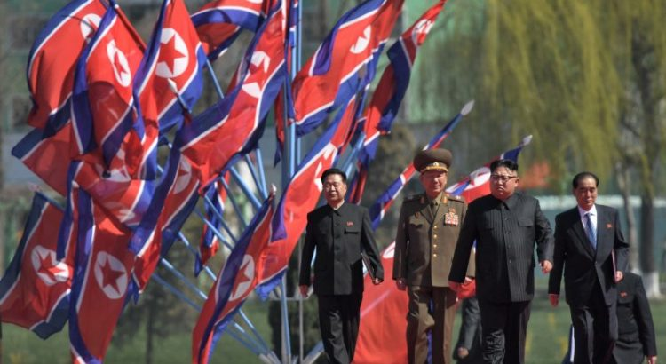
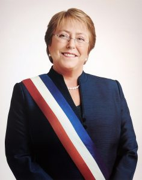

UN Denounces North Korea’s Abuse of Women

Dozens of women who left North Korea to look for work abroad have alleged abuse by elements of North Korean security forces once they were forced to return to the country.In a report published by the United Nations, these women said the abuse occurred on several occasions.
The complaints are made in a report by the United Nations Office of the High Commissioner for Human Rights based on the testimonies of nearly 100 North Korean women who were forcibly repatriated.They report, among other abuses, rape, forced abortions, beatings and invasive body searches.Said one:
'I was beaten with a club by a preliminary investigation officer and was kicked by the officer.The treatment was particularly harsh at the Ministry of State Security.If one is found to have gone to a South Korean church while staying in China, they are dead.I therefore tried hard not to reveal my life in China.I was beaten up as a result.I was beaten to a level that my rib was broken.I still feel the pain.'
These women, who were detained by North Korean forces between 2009 and 2019, also report that they were detained in places considered unhealthy, and almost without food.According to the report, and based on these testimonies, multiple and serious violations of human rights were committed by elements of North Korea’s state security forces and police.
'I did not sleep and worked because I did not want to be beaten.It was excruciating to a level that I even attempted to commit suicide,' another woman said.These women spoke with elements of the High Commissioner for Human Rights after having managed to leave North Korea again.
Testimonies suggest that these women, who in many cases were victims of forced labor or sexual exploitation in other countries, were viewed as traitors by the North Korean authorities, and should be punished for having contacted people of other faiths abroad, namely the Christian religion.
'It is heartbreaking to read these stories of women who fled their country looking to make ends meet, but who ended up being punished,' said the UN High Commissioner for Human Rights, former Chilean President Michelle Bachelet, cited in the same report.
She said the women 'should be taken care of, not detained and subjected to further human rights violations.'She added, 'these women have a right to justice and to be compensated.'
Contacted by international agencies, the North Korean diplomatic mission in Geneva, Switzerland has so far not commented on the content of the said report.
The High Commissioner also called on foreign countries that have been or are the destination of North Korean women, including 'nearby' China, to respect the principle of 'non – refoulement.'That is, not returning people to countries where they can face a real risk of human rights violations.
'These accounts show once again the systemic nature of human rights violations in the DPRK, and the need to keep seeking pathways to proper accountability for such crimes,' said Bachelet.
This report focuses only on North Korean women who have fled abroad looking for work, not to mention the cases of people held in political prisons in North Korea.International organizations believe these prisons are places where serious human rights violations are perpetrated.
North Korea is an extremely secretive Asian state, currently ruled by the brutal Kim Jong Un.He and his predecessors in the Kim Dynasty are known for their brutality and autocratic rule.
[bsa_pro_ad_space id=4]
Share on Facebook Tweet Follow us
Posted On: 2020-07-28T00:00:00
Posted By: Vincent Ferdinand





Content Date: 2020-07-28
Download Date: 2021-07-09
Document ID: L0C04EWNB